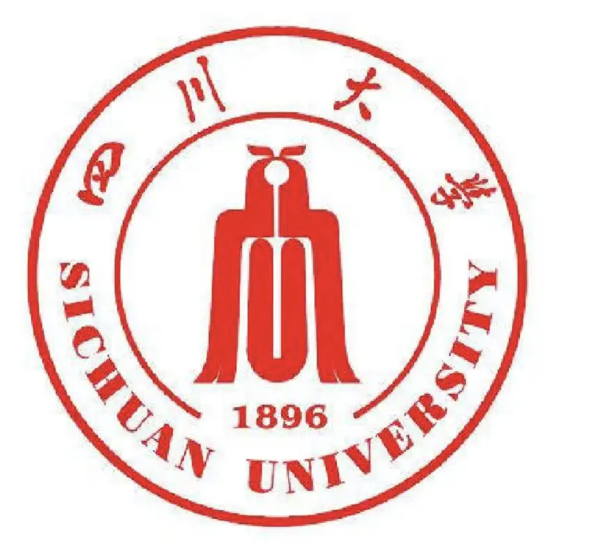

Hang Fan
 |
Post Doc, |
About me
I received his B.E. degree from School of Electrical Engineering (Wu Yuzhang Honor College), Sichuan University in 2015 and Ph.D. degree from Department of Electrical Engineering and Applied Electronics Technology, Tsinghua University in 2021, during which I minored in Tsinghua University Data Science Competency Enhancement Program. In August 2017, I visited the School of Engineering and Applied Science, Harvard University. Now I am a postdoctoral fellow at the PBC School of Finance, Tsinghua University (jointly trained with the Institute for Interdisciplinary Information Sciences, Tsinghua University), where my main research interests include privacy preserving machine learning and data pricing, fintech and energy economics. I have participated in several digital economy, fintech projects (including the digital identity authentication and personal data account project chaired by Wu Xiaoling, former vice governor of the central bank, and other key project of the Natural Science Foundation in the digital economy). I have has published 14 SCI/EI papers and participated in writing one industry standard in privacy computing. I have also won the National Scholarship, Tang Lixin Scholarship and Tsinghua Data Science Institute RONG Scholarship Grand Prize. Besides, I have interned at financial institutions such as Harvest Fund and Shenwan Hongyuan Securities, passed the securities qualification exam and CFA level I.
Research Interests: Privacy Preserving Machine Learning, Data Trading, Machine Learning, Fintech, Energy Economics.
Work Experience
 |
Post doc, Tsinghua University (THU), Haidian, Beijing [2021.9 ~ 2023.9]
|
Educations
|
|
PhD, Tsinghua University (THU), Haidian, Beijing [2015.9 ~ 2021.6]
|
|  | B. Sc, Sichuan University, Chengdu, Sichuan [2011.9 ~ 2015.6]
|
Publications
Research on Smart Contract Method in the Framework of Secure Multi-party Computation
Hang Fan, Qianwen Wang，Yunhe Wang
M2GSNet: Multi-Modal Multi-Task Graph Spatiotemporal Network for Ultra-Short-Term Wind Farm Cluster Power Prediction
Hang Fan, Xuemin Zhang, Shengwei Mei, et al.
Applied Sciences, 2020, 10(21): 7915. (SCI, JCR Q2，CiteScore=3.7)
A Markov Regime-Switch Model for Ultra-Short-Term Wind Power Prediction based on Toeplitz Inverse Covariance Clustering
Hang Fan, Xuemin Zhang, Shengwei Mei, Junzi Zhang
Frontier in Energy Research. (SCI，JCR Q2，CiteScore =4.6)
Wind Power Time Series Missing Data Imputation Based on Generative Adversarial
Hang Fan, Xuemin Zhang, Shengwei Mei.
2021, IEEE 4th International Electrical and Energy Conference (CIEEC), Wuhan, China,2021:1-6.
基于时空神经网络的风电场超短期风速预测模型
Hang Fan,Xuemin Zhang,Shengwei Mei,Zhongliang Yang
The Automation of Power System,2021,45(01):28-38.
Scale-and Context-Aware Convolutional Non-Intrusive Load Monitoring
Kunjin Chen, Yu Zhang, Qin Wang, Jun Hu, Hang Fan, et al.
IEEE Transactions on Power Systems, 2019, 35(3): 2362-2373. （SCI,JCR Q1，CiteScore=22.5
Post-fault Transient Stability Assessment Based on k-Nearest Neighbor Algorithm with Mahalanobis Distance
Hang Fan, Ying Chen, et al.
POWERCON,2018.
Power system transient stability assessment based on dimension reduction and cost-sensitive ensemble learning
Hang Fan, Shaowei Huang, Ying Chen, et al.
IEEE Conference on Energy Internet and Energy System Integration (EI2) in 2017: 1-6.
Visualization of power system transient process based on manifold learning
Hang Fan, Shaowei Huang, Ying Chen, et al.
35th Chinese Control Conference (CCC) in 2016: 10119-10123.
Patents
Rotating standby interval prediction method based on probabilistic interval prediction for counting and wind power acceptance
Tianqi Liu，Qian Li ，Fujun Wang ，Jing Ma ，Xing Wu， Tieying Guan， Haiming Lin，Hang Fan
China Invention Patent, ZL201410240410.3
A technical solution for determining harmonic instability in a double-loop parallel high-voltage DC transmission system
Tianqi Liu，Yuanyuan Ding，Xingyuan Li，Jing Ma，Shi Chen，Feng Wang，Baohong Li，Hang Fan
China Invention Patent, ZL201410315798.9.
Flow learning based visualization method for power system dynamic simulation
Shaowei Huang，Chunlai Li，Ying Chen，Haining Zhang，Hang Fan，Libin Yang，Kun Jia，Zhengxi Li
China Invention Patent, ZL201410240410.3
Ultra-short-term Wind Power Prediction Based on vertical federated Xgboost
Hang Fan，Zhilong Chen，Tianyi Hao，Kun Chen，Guosai Wang
China Invention Patent,
Ultra-short-term Wind Power Prediction Based on horizontal federated Xgboost
Hang Fan，Zhilong Chen，Tianyi Hao，Kun Chen，Guosai Wang
China Invention Patent
A method and system for determining critical cut-off time of power systems based on Siamese network model
Dongyu Shi，Bairen Chen，Jianfeng Yan，Erzhuan Zhou，Ying Chen，Liukai Chen，Donghai Chen，Hang Fan
China Invention Patent
Other Project
Research on intelligent high-speed railway data service system based on data validation
Cooperation with Beijing Jiaotong University, as the main participant in the project, ranked sixth, the National Natural Science Foundation of China Joint Fund for Basic Railway Research Key Support Project
Research on the Construction Market Foundation Trust Construction under the Digital Economy
Collaboration with Ms. Deng Xiaomei, School of Construction and Management, Tsinghua University, as the main participant of the project, ranked fourth, National Natural Science Foundation of China
Web 3.0 oriented personal identity authentication system
The project's main participant, Wu Xiaoling, former deputy governor of the central bank, set up the subject
Wind Power/Photovoltaic Power Forecasting Technology and Application to Promote Renewable Energy Consumption
Main participant of the project, National Ministry of Industry and Information Technology Key R&D Program
Ultra-short-term prediction of wind speed considering the spatial-temporal correlation model of wind processes
Project Lead Participant, Inner Mongolia Power Company